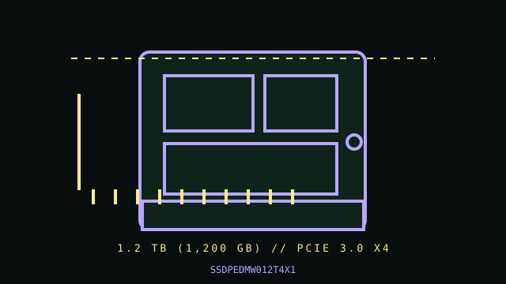

[ PCIE 3.0 NVME DRIVES // IDENTIFIED PRODUCT ]
Intel SSD 750 Series 1.2 TB (SSDPEDMW012T4X1)
1.2 TB (1,200 GB) Half-height, half-length PCIe add-in card (HHHL AIC); PCIe 3.0 NVMe SSD. Cataloged by the complete manufacturer part number below; performance figures are vendor-rated, not independent test results.

IDENTIFICATION: Verify the complete MPN, suffix, serial/date code, hardware revision and firmware against the product label. Capacity variants, factory heatsinks and regional SKUs may differ; the link and rated data below apply only to the specified configuration where the manufacturer identifies it.
Manufacturer-identified specifications
| Product / MPN | Intel SSD 750 Series 1.2 TB (SSDPEDMW012T4X1) — SSDPEDMW012T4X1 |
|---|---|
| Capacity / form factor | 1.2 TB (1,200 GB); Half-height, half-length PCIe add-in card (HHHL AIC). |
| Interface / lane width | PCIe 3.0 x4, add-in card. |
| Protocol | NVMe (Intel SSD 750 Series). |
| Rated performance / endurance | Sequential up to 2,400 MB/s read and 1,200 MB/s write (1.2 TB AIC SKU); Intel specifies endurance as 219 TBW for this SKU. |
| Model era | 2015 product generation; check manufacturer lifecycle/support notice. |
| Heatsink / revision | AIC with onboard heat spreader; requires a compatible full-length PCIe slot and airflow. It is not an M.2 module. Confirm whether the exact SKU includes an HHHL bracket/accessory before installation. |
Compatibility, installation & service
- This is a workstation-oriented add-in card, not a drive for M.2/U.2 wiring. Confirm slot length, electrical x4 lane availability, firmware/UEFI NVMe boot support, and boot order behavior. Intel SSD 750 predates newer NVMe revisions; OS driver and firmware support depend on host platform. A physical x4 slot is not sufficient if the board routes lanes differently or bifurcation is required.
- Power down and unplug the workstation, discharge static safely, and install only in a PCIe slot with adequate clearance and cooling. Check the system/service manual for slot wiring, shared lanes, boot policy, and required legacy/UEFI option-ROM mode; do not assume every older UEFI can boot NVMe. Preserve backups and record firmware before maintenance. Inspect card/bracket condition and avoid touching exposed components; sustained heavy writes can raise controller temperature.
- Do not hot-plug an M.2 module unless the server/platform manual explicitly documents hot-plug support. Shut down cleanly, disconnect standby power when instructed, and use electrostatic-discharge precautions during handling.
- Before replacing a boot drive, verify a recoverable backup, OS recovery media, encryption keys, firmware settings and the target system’s boot mode; physical fit does not establish compatibility.
Manufacturer references
- Intel SSD 750 Series 1.2 TB — exact Intel specification pageOfficial manufacturer product/specification reference; use the exact MPN on the drive label and its linked specification/downloads for revisions, capacity ratings, fit and warranty limits.
- NVM Express — specifications and technical documentationStandards reference for NVMe; it does not establish this product’s SKU-specific implementation.
Manufacturer ratings are model/capacity-specific and measured under stated vendor conditions; they are not guarantees of sustained speed in every host. Confirm current datasheet/manual, support status and warranty in the manufacturer’s regional support portal before deployment.